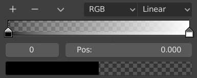

颜色渐变部件¶
颜色渐变 使用户能够指定基于色标的颜色变化。色标类似于标记，用于标明该点的确切颜色。色标之间的颜色取决于色标颜色与插值方式。

颜色渐变。
控件¶
- 添加
+ - 单击该按钮，为自定义权重映射添加色标。新添加的色标位于最后选中的色标与左侧色标中间。
- 删除
- - 从列表中删除选中色标。
- 专项菜单
v 包含更多颜色渐变的操作。
- 反转渐变色
- 翻转渐变色带，翻转自定义权重绘制范围的值。
- 从左侧分布断点
- 从左至右均匀分布每一个断点，当与插入常值一起使用时，这非常有用。
- 均匀分布断点
- 使每一个断点之间的距离保持相等。
- 吸管工具（吸管图标）:kbd:E
- 使用 吸管工具 从界面中提取相同的颜色或渐变色。
- 重置颜色渐变
- 恢复颜色渐变至初始状态。
- 色彩模式
选择用于插值的 色彩空间。
- RGB
- 混合各个颜色通道，并合成颜色。
- HSV/HSL
- 先转换颜色为HSV或者HSL，然后混合，在合成颜色。该方法的优势在于可以保持不同色调之间的饱和度，获得更丰富的渐变，而RGB则会降低饱和度。
- 插值选项
供用户选择色标之间的插值计算方法类型。
- RGB
- 插值样条
- 色标之间使用 B-样条曲线 插值。
- 原始
- 色标之间使用 原始 插值。
- 线性
- 色标之间使用 线性 插值。
- 移动
- 色标之间使用 移动 插值。
- 常值
- 色标之间使用 常数 插值。
- HSV 与 HSL
- 顺时针
- 沿HSV/HSL 色轮顺时针插值。
- 逆时针
- 沿HSV/HSL 色轮顺时针插值。
- 相近
- 色轮上最近的路径。
- 远
- 色轮上最远的路径。

HSV 与 HSL插值选项。
- 活动色标
- 活动色标 (显示为虚线)索引。在色标过于密集时，可以用于改变活动色标。
- 位置
- 该滑块用于控制选中色标在色带上的位置。
- 颜色
- 打开颜色选择器选择颜色点和Alpha通道值。 当颜色使用Alpha时，颜色区域将被分为两部分，左侧显示基色，右侧显示带alpha值的颜色。
快捷键¶
- LMB (拖动) 移动颜色。
- Ctrl-LMB (单击) 添加控制点。